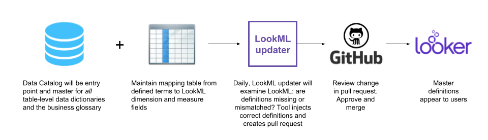

LookML Updater¶
Data is higher quality if it is defined. Moreover, definitions should be consistent wherever the data are in our systems—we should never get out of sync as this causes confusion. Thus, our goal is to have a single source of truth of definitions and have those definitions propagate into other systems. This is one part of the propagation system: propagate from master source to LookML.
This code provides the ability to examine the dimensions, dimension_groups, and measures of LookML, examine whether they contain correct descriptions, compared to some master source.
If they are missing or are incorrect or otherwise out of sync, this code will update or inject the correct description into the LookML. This can then be committed and pushed to a branch for review in a pull request. This code just does the LookML updating.
Here is a possible, example workflow:

Configuration¶
You will need to specify the source of the definitions:
{
"definitions": {
"type": "CsvDefinitionsProvider",
"filename": "definitions.csv"
}
}
or
{
"definitions": {
"type": "MySQLReader",
"query": "select * from test",
"username": "myusername",
"password": "mysecret",
"port": 3306,
"host": "127.0.0.1",
"database": "mydb"
}
}
How it works¶
The code parses a LookML file into a JSON object using
lkmlparser.This format allows easy interrogation of dimensions and measures to see whether they contain a description.
We use a master source of dimension and measure definitions. Currently, can come from a local CSV (using
CsvDefinitionsProvider) or relational databases (MySQLReader,PostgreReader, andSqliteReader) including a BiqQuery table (usingBqDefinitionsProvider) which, for instsnce, could be a sync from a data catalog tool.If a dimension doesn’t contain the description, it is injected in the LookML file. If a description exists but it does not match the master definition, it is updated
the updated LookML file is written out. The goal is not to modify other lines of the file (e.g., by changing whitespace or formatting) so that a
git diffhighlights just the description line modifications, thus making a pull request as easy as possible.
To run¶
To run,
python run_updater.py --config config/config.json --infile my_amazing_view.lkml --outfile modified.lkml
(You can set outfile to be same as infile so that it modifies the existing file.)
Example¶
Given an input example.lkml LookML file
view: dim_geography {
sql_table_name: `BQDW.DimGeography` ;;
dimension: city_code {
type: string
description: "this
is
an
exsiting
multiline
description"
sql: ${TABLE}.CityCode ;;
}
measure: count {
type: count
drill_fields: [detail*]
}
}`
and set of required definitions:
file,type,name,definition
example.lkml,dimension,city_code,"This
is
the
correct
description"
example.lkml,measure,count,this is the count description
Running
python run.py --config example_config.json --infile example.lkml --outfile example_outfile.lkml
(where example_config.json points to that CSV above)
results in example_outfile.lkml
view: dim_geography {
sql_table_name: `BQDW.DimGeography` ;;
dimension: city_code {
type: string
description: "This
is
the
correct
description" # programmatically added by LookML modifier
sql: ${TABLE}.CityCode ;;
}
measure: count {
description: "this is the count description" # programmatically added by LookML modifier
type: count
drill_fields: [detail*]
}
}
Fully automated script¶
full_auto_updater.sh is a bash script that creates a full automation:
Checks out LookML code
Runs updater
if and only if any changes made:
commits
pushes to remote
creates a pull request.
As the comments in the script show, to run this script, you will need to set a few variables:
ACCESS_TOKENfor github (orGITHUB_USERandGITHUB_PASSWORD)REMOTEURL for gitrepo to updatedefinitions source
Current limitations, assumptions, and TODOs¶
code assumes that the opening curly brace for a dimension or measure is on the same line, ie.
dimension: myname {notdimension: myname \n\n\n{